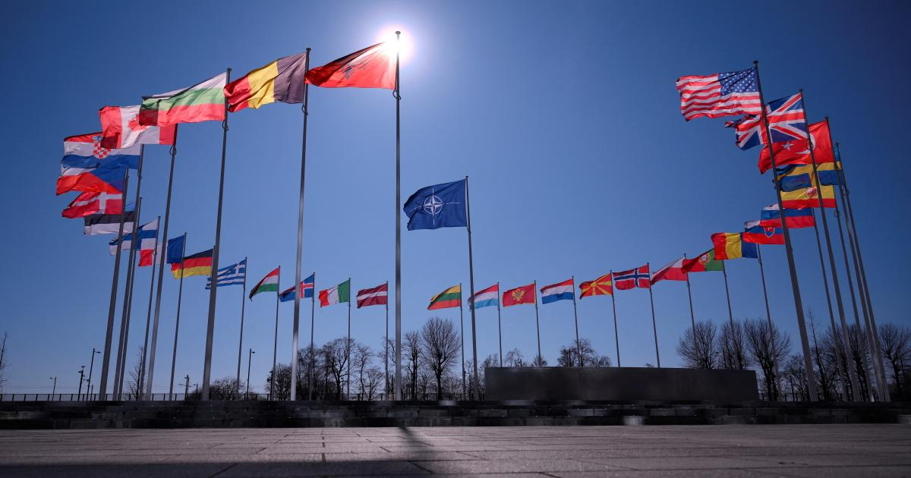
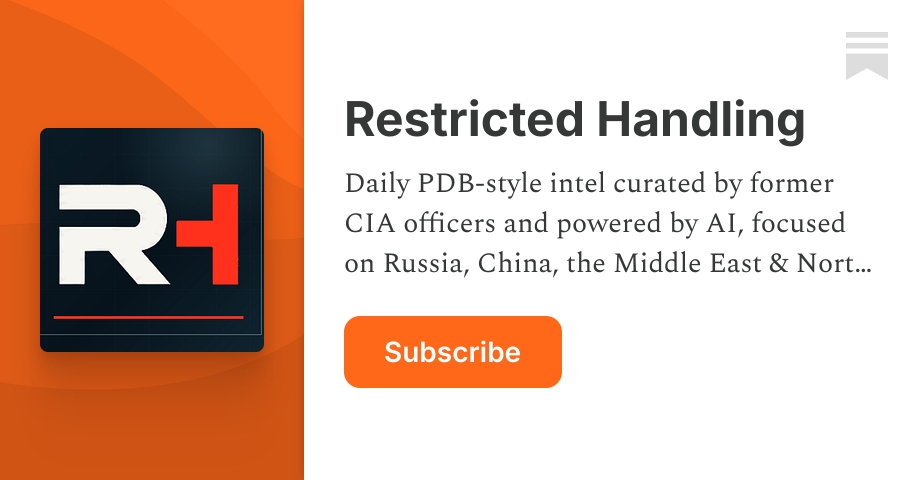
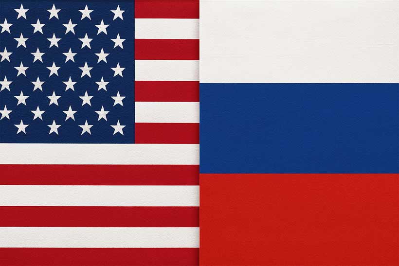

← Back to front pageWORLD INTELGeo Political Intel
14 digest(s) · newest first

Date saved: 2026-10-23 18:00 (PDT)
Sources: Hudson Institute, Reuters, Financial Times, European Union Consilium, Carnegie Endowment, Swedish UI, Sejong Institute, NATO
Key findings
Hudson Institute: a new anti-Western axis threatens the free world
A new anti-Western axis centered on China and Russia and reinforced by Iran and North Korea is threatening the security and prosperity of the free world, according to the Hudson Institute. In the Middle East, Russia and China have provided important support to Tehran, with China buying almost all of Iran's oil despite US-led sanctions. If Beijing decides to attack Taipei, a Third World War scenario becomes possible as Russia attacks NATO and Iran attacks Israel or the Gulf states simultaneously. (Source)
EU id identifies Russia and China as determined to reshape the global order
The EU's foreign policy document states that Russia and China are determined to establish regional dominance and reshape the global order in line with their interests, fostering a return to a sphere-of-influence logic. China positions itself to win systemic competition, combining industrial scale, technological ambition, and global reach. The deepening China-Russia strategic partnership continues increasing the interconnection of strategic theaters from Europe to the Indo-Pacific. (Source)
China rises in unstable world - Swedish Institute analysis
Chinese analysts almost unanimously expect the comprehensive rivalry between China and the United States to continue in the long term, with many foreseeing prolonged strategic decoupling and persistent contestation in the Asia-Pacific. Relations between China and Russia are expected to remain stable and broadly positive, with Russia viewed as China's key strategic partner. Chinese analysts acknowledge latent tensions including a growing power imbalance. For Europe, China is benefiting from the ongoing transatlantic split and will continue to prioritize its partnership with Russia. (Source)
Sejong Institute: 2026 as a global geopolitical crisis year
The near-simultaneous crises that erupted beginning in January 2026, including the US operation to apprehend Nicolás Maduro, the escalation of the Iran-Israel conflict, and the intensification of Sino-Japanese tensions alongside heightened military tensions in the Taiwan Strait, cannot be reduced to discrete localized disputes. These developments are deeply interconnected, functioning as critical geopolitical fault lines along which the Western-led unipolar order and the emerging multipolar order championed by China and Russia are locked in direct confrontation. (Source)
NATO and Europe face burden-sharing reckoning
The US can no longer focus on Europe and has to shift resources to Asia and maintain a presence in the Middle East. As a result, Europeans need to take responsibility for large parts of conventional defense against Russia. The transatlantic relationship and EU-NATO cooperation remain key to overall security, but the future of NATO is seen as unclear as Europe is forced to take on heavier security burdens and trust less in the United States. (Source)
Oil hits $117 on Iran fears
Oil prices hit $117 for the first time since April on fears of a flare-up in Iran hostilities, according to the Financial Times. The Strait of Hormuz remains a flashpoint, with Tehran reportedly shutting the strait after Israeli strikes on Lebanon. (Source)
US imposes sanctions on Iran weapons procurement network
The US government announced fresh sanctions on 13 individuals and entities, including some based in Russia, China, Hong Kong, and Pakistan, saying they helped Iran procure weapons and components. (Source)
Carnegie: US and China converge in Middle East
In the Middle East and North Africa, the competition between the United States and China presents itself not as a threat but as an opportunity for regional powers. Washington and Beijing's positions in MENA are increasingly converging, and the two powers should accept competition and find a division of labor that safeguards their respective interests in free trade, stability, and security. (Source)
Qatari mediators press US-Iran peace deal
Qatar said it hopes that shuttle diplomacy between Iran and the US can lead to a breakthrough despite Trump's denial of media reports that he was willing to ease sanctions and release frozen funds in exchange for Iranian concessions on its nuclear program. (Source)
 ▶Watch the video on YouTube
▶Watch the video on YouTube ▶Watch the video on YouTube
▶Watch the video on YouTubeThe geopolitical picture in October 2026 is best understood as a system under stress. Three major theaters - Ukraine, the Middle East, and the Taiwan Strait - are not independent events but interconnected fronts in a broader contest between the US-led order and what the Hudson Institute calls an 'anti-Western axis' centered on China, Russia, Iran, and North Korea. The near-simultaneous crises that erupted in January 2026, including the US operation to apprehend Venezuelan President Nicolás Maduro, the escalation of the Iran-Israel conflict, and heightened military tensions in the Taiwan Strait, are all connected by the same underlying structure.
Europe faces a particular strategic dilemma. The EU's own foreign policy document acknowledges that the US is recalibrating its priorities, with expectations that Europeans assume greater responsibility for their own security. NATO Secretary General Mark Rutte has frequently discussed the idea that China and Russia might launch coordinated military offensives in Asia and Europe at the same time, and the alliance is grappling with how to prepare for that scenario. China positions itself to win systemic competition by combining industrial scale, technological ambition, and global reach while exploiting instability. Its support for Russia's aggression against Ukraine is described by the EU as a 'crucial enabler for Moscow.'
The US-China relationship remains the central competitive dynamic. China now has a larger navy than the US, is steadily increasing pressure on Taiwan, and plays the key economic role in the anti-Western axis by buying almost all of Iran's oil despite US sanctions. The question for 2026 and beyond is whether this competition can be managed below the threshold of direct conflict, or whether a crisis in one theater cascades into another. (Source)
Source links

Date saved: 2026-10-23 03:00 (PDT)
Sources: U.S. Intelligence Community ODNI, Hudson Institute, European Union Consilium, Al Jazeera, Swedish UI
Key findings
The intelligence community's assessment
- ODNI, 2026 Annual Threat Assessment (March 2026): China aims to dominate its region and challenge Washington's leadership, promote its own multilateral and economic influence, and strengthen its military while viewing the U.S. as its main strategic competitor; Russia continues to challenge U.S. interests and power, seeking to restore its influence in the former Soviet space, particularly Ukraine; the IC assesses that Chinese leaders do not currently plan to execute an invasion of Taiwan in 2027, nor do they have a fixed timeline for achieving unification; Russia is likely to remain resilient against Western sanctions and export controls, although at the cost of expanding budget deficits and underinvestment in the civilian economy that increase the risk of long-term economic stagnation and deepening dependence on China. (Source)
The "axis of challengers" analysis
- Hudson Institute, Peter Rough and Ulrich Speck (Oct 21, 2026): A new anti-Western axis, centered on China and Russia and reinforced by Iran and North Korea, is threatening the security and prosperity of the free world; Russia's full-scale war against Ukraine is the most visible front line; China plays the key economic role in the Middle East, buying almost all of Iran's oil despite a US-led sanctions regime; China's pressure on Taiwan increases almost daily and a Taiwan scenario could trigger a Third World War; the axis of challengers considers the free and open West to be a threat and is working to overturn the US-led global order. (Source)
- European Union Consilium (2026): Russia uses a network of shadow fleet vessels for oil exports, evading sanctions, while creating maritime, environmental, legal, and enforcement risks; China positions itself to win systemic competition, combining industrial scale, technological ambition, and global reach while exploiting instability; China's support to Russia's aggression against Ukraine is a crucial enabler for Moscow; China's increasingly assertive behavior in the South and East China Seas and across the Taiwan Strait can have a growing impact on European and Indo-Pacific security. (Source)
China-Russia dynamics and the Arctic
- Swedish UI, China rises in an unstable world (2026): Chinese analysts almost unanimously expect the comprehensive rivalry between China and the United States to continue in the long term; many foresee prolonged strategic decoupling and persistent contestation in the Asia-Pacific; relations between China and Russia are expected to remain stable and broadly positive, but analysts acknowledge latent tensions, including a growing power imbalance. (Source)
- ODNI Annual Threat Assessment: Russia, and China to a lesser extent, are expanding their interest and presence in the Arctic to counter perceived U.S. inroads and advance their strategic interests; China, Russia, and North Korea are developing new, novel, or advanced delivery systems to increase or obtain a capability to strike the Homeland. (Source)
 ▶Watch the video on YouTube
▶Watch the video on YouTube ▶Watch the video on YouTube
▶Watch the video on YouTubeThe 2026 Annual Threat Assessment of the U.S. Intelligence Community names China, Russia, Iran, and North Korea as viewing the U.S. as a strategic competitor and potential adversary, and describes a world in which armed conflict is becoming more common, major power competition continues, and military capabilities among state and nonstate actors are improving. The assessment is not a worst-case scenario (it is the intelligence community's baseline. The EU's consolidated geopolitical analysis is more pointed: it describes a deliberate effort by Russia and China to "establish regional dominance and reshape the global order in line with their interests, fostering a return to a sphere-of-influence logic," with China's support enabling Russia's war effort and China's asymmetric advantages), trade imbalances, critical raw materials, technological advances, being used as leverage against the EU.
The Hudson Institute's October 2026 analysis frames the same landscape as an "axis of challengers" led by China and Russia and reinforced by Iran and North Korea, and warns that if Beijing decides to attack Taiwan, a Third World War scenario becomes possible: China attacks Taiwan, Russia attacks NATO, and Iran attacks Israel or the Gulf states (a scenario in which the U.S. would likely be overwhelmed. The throughline is that the regional conflicts are not separate) they are interlocking, and the economic architecture that enables them (China buying almost all of Iran's oil despite U.S.-led sanctions, China providing dual-use goods vital to the Russian arms industry) is the connective tissue that makes isolation of any one actor difficult. What to watch next is whether the Kremlin's proposal for a trilateral U.S.-Russia-China meeting at the APEC summit becomes anything more than a trial balloon, and whether the EU's push for burden-sharing within NATO produces actual European conventional defense capability or remains a diplomatic aspiration.
Source links

Date saved: 2026-10-22 18:00 (PDT)
Sources: Hudson Institute, Steptoe LLP, Washington Examiner, Washington Institute, ONE BRIEF, Times Now World, Jack Hamilton Geopolitics, USTD/SISF
Key findings
US-Russia sanctions waiver and the diesel deal
- On October 16, 2026, President Trump waived parts of the new Russia sanctions package, citing US national interests, in an executive order that explicitly leaves existing Russia measures under earlier executive orders in place; critics argue the move weakens pressure on Moscow and raises questions about future sanctions enforcement and credibility with allies. (Source)
- Trump struck a new energy agreement with Vladimir Putin to return Russian diesel to global markets, framed as a strategy to lower fuel prices for US consumers; the move directly challenges the established European and UK sanctions regime and has sparked immediate debate in Washington and concern among NATO allies. (Source)
The proposed Trump-Putin-Xi summit and allied pushback
- Trump is weighing a reported proposal for a summit with Putin and Xi Jinping at the APEC summit in Shenzhen, China, on November 18-19, 2026; Ukrainian President Zelensky has insisted that Kyiv must participate in any negotiations concerning Ukraine's future, and Ukrainian Foreign Minister Andrii Sybiha warned that excluding Ukraine could encourage Moscow to continue the war. (Source)
- EU officials have questioned Russia's commitment to peace and called for Europe to play a role in any settlement; US envoy Steve Witkoff is expected to travel to St. Petersburg for talks with Putin after discussions with Ukrainian and European representatives. (Source)
China's enabling role and the adversary coordination picture
- China is the key economic enabler of Russia's war effort, buying roughly 20% of Russian oil and gas and transacting about a third of Russian trade through the yuan to evade Western sanctions; China also buys almost all of Iran's oil despite a US-led sanctions regime arrayed against the Islamic Republic. (Source)
- At the Sydney International Strategy Forum 2026, Admiral John C. Aquilino warned that China, Russia, Iran, and North Korea are cooperating on military and technology sharing, economic support, and information operations in ways that are reshaping global security governance; the panel examined risks of conflict over Taiwan and lessons from the wars in Ukraine and the Middle East. (Source)
- A report from Steptoe LLP noted that US-China relations will remain adversarial but stable into 2026, with tariff truces and limited cooperation continuing, but that the Ukraine war will stress-test the transatlantic alliance and that NATO allies fear Russia's wartime economy has achieved a scale of production capable of sustaining operations against the alliance within a few years. (Source)
- John Mearsheimer argued that Europe's post-Cold War stability has depended heavily on the United States and NATO, but that the balance may be changing as Washington focuses on China and the Indo-Pacific; he warned that a major US drawdown could weaken NATO and put pressure on the European Union. (Source)
 ▶Watch the video on YouTube
▶Watch the video on YouTube ▶Watch the video on YouTube
▶Watch the video on YouTubeThe great-power landscape in October 2026 is defined by a US administration simultaneously easing pressure on Russia and trying to pivot toward China (a combination that has alliance managers in Europe and Indo-Pacific capitals scrambling to figure out what American commitments are actually worth. On October 16, President Trump waived selected provisions of a new Russia sanctions law, citing US national interests, in an executive order that critics argue weakens pressure on Moscow and raises questions about future sanctions enforcement. The waiver came alongside a reported arrangement involving Russian diesel exports returning to global markets) a move framed as a way to lower fuel prices for American consumers but one that directly challenges the European and UK sanctions regime against Moscow and has NATO allies questioning whether the Western sanctions architecture is holding.
The timing is politically charged: Trump is also weighing a reported proposal for a trilateral summit with Vladimir Putin and Xi Jinping at the APEC summit in Shenzhen in November 2026, a meeting that would exclude Ukraine and that European officials have already pushed back on, calling for Europe to play a role in any settlement. Ukraine's Foreign Minister warned that excluding Kyiv from negotiations about its future could encourage Moscow to continue the war. Meanwhile, China continues to play the key economic role in enabling Russia and Iran (buying almost all of Iran's oil despite a US-led sanctions regime and purchasing roughly 20% of Russia's oil and gas) and US adversaries are increasingly coordinating on military and technology sharing in ways that, according to Admiral John C. Aquilino, former US Indo-Pacific Command Commander, demand a closer defense, economic, and diplomatic response from democratic allies.
Source links

Date saved: 2026-10-22 03:00 (PDT)
Sources: Financial Times, Reuters, Associated Press, Bloomberg, Guardian, Restricted Handling, Mackinder Forum, Modern Diplomacy, Taipei Times, Al Jazeera
Key findings
Ukraine diplomacy: energy ceasefire collapses, Trump waivers Graham Act sanctions, "new president" remarks
- Restricted Handling (Oct 20, 2026): On October 19, Secretary of State Marco Rubio gave Washington's Graham Act waiver a new peace-process rationale, describing an up-to-60-day policy review intended to test whether US contacts with both Russia and Ukraine could produce progress. Energy Secretary Chris Wright called a separate limited diesel arrangement a "carrot," while existing Russia sanctions remain in force. Trump signed an executive order on October 16 waiving key sanctions and tariffs under the Graham Act (measures including tariffs on Russian goods and penalties on countries buying Russian oil and gas) due to take effect October 19. Rubio was scheduled to meet with C5+1 leaders in Samarkand (Uzbekistan, Kazakhstan, Kyrgyzstan, Tajikistan, Turkmenistan), with US officials portraying resource-rich Central Asia as worthy of more attention. (Source)
- Mackinder Forum (Oct 10-16, 2026): The collapse of Trump's energy-strike pause shows US mediation now lacks enough trust to restrain either combatant. The Associated Press reports that Ukraine resumed attacks on Russian energy infrastructure, striking the Ryazan refinery after a brief pause requested by President Trump. The Financial Times reports that US forces disabled the Panama-flagged commercial tanker Ocean Molica (also known as Arika Sun) in the Gulf of Oman after alleging it violated the naval blockade on Iranian ports, a blockade-enforcement strike turning the Iran war back toward direct US interdiction at sea. (Source)
- Associated Press / Bloomberg (Oct 2026): Trump said "it's time for Ukraine to get a new president," blaming Zelensky's strikes on Russian refineries for the global diesel squeeze. On October 9, Trump announced a deal letting Russian diesel back onto US and world markets; Moscow cleared 500,000 tonnes of exports from the next day. On September 18, Trump signed the Lindsey Graham Sanctioning Russia and Iran Act, whose core measures (tariffs of up to 100% on top buyers of Russian crude and sanctions on Sberbank and VTB) were due October 19. (Source)
- Taipei Times (Oct 19, 2026): Trump said he has yet to announce a final decision on Russia sanctions, with Rubio saying officials want more time to evaluate the economic impact of Russia-related sanctions and tariffs that he waived. The day after waiving sanctions, Trump said he would use up to 60 days to assess the economic impact. (Source)
China-Russia axis, sanctions, and tech competition
- Financial Times / Mackinder Forum (Oct 2026): Beijing is turning AI know-how into an export-controlled strategic asset, mirroring Washington's technology-security playbook. China released draft export controls covering dozens of advanced technologies, including artificial-intelligence models, agents, chip design, packaging, and networking technologies. The EU's negotiated Chinese hybrid quota marks a shift from tariff defense toward managed market access (the Guardian reports the EU and China agreed to cap imports of Chinese-made hybrid vehicles at about 350,000 a year, with shipments above the quota blocked at customs. Taiwan is hardening the US-led chip-control perimeter by criminalizing unauthorized advanced-hardware exports to China) Bloomberg reports Taiwan plans to add advanced AI servers and cutting-edge semiconductors to its controlled-export list as part of a trade arrangement with the United States; unauthorized shipments to China would become a criminal offense under Taiwan's Foreign Trade Act. (Source)
- Reuters (Oct 13, 2026): The Trump administration opposes "coercion and aggression" by China against countries for exercising their sovereign rights, after Beijing sanctioned Belizean and Paraguayan ministers over their ties to Taiwan. Paraguay and Belize are two of just 12 countries maintaining formal diplomatic relations with Taiwan. China says Taiwan is one of its provinces with no right to behave like a state. Taiwan Deputy Foreign Minister Chen Ming-chi said China was extending "transnational repression" to Taiwan's allies. Taiwan Premier Cho Jung-tai said Beijing had no right to interfere in the domestic affairs of any sovereign and independent state. (Source)
- Global Times / Reuters (Oct 2026): Chinese Foreign Minister Wang Yi met with Russian Foreign Minister Sergei Lavrov in Baku, Azerbaijan, discussing bilateral relations, multilateral cooperation, and international and regional issues. Chinese Premier Li Qiang said China and Russia have in recent years stood side by side and moved forward together in the face of a complex and turbulent international landscape. China sanctions Paraguayan and Belizean ministers over Taiwan, delivering explicit warning of "no bargaining over one-China principle." (Source)
- The English Globe (May 22, 2026): China and Russia are strengthening their alliance against US influence, from energy cooperation and trade systems to military strategy, technology competition, and AI development. The United States responded by imposing export restrictions and technology sanctions designed to limit Chinese and Russian access to certain advanced technologies, especially semiconductors, artificial intelligence, advanced manufacturing, and national security concerns. (Source)
Middle East, Hormuz, Saudi-Houthi, and the diesel deal
- Modern Diplomacy (Week of Oct 12, 2026): A strike on Riyadh's King Khalid International Airport on October 10 killed at least 12 people, including an American, and wounded 309, Saudi officials said. It followed a Houthi-claimed strike two days earlier that killed three Saudis. The Saudi-led coalition says it has destroyed 136 Houthi targets and is backing a Yemeni government push on the Bab el-Mandeb Strait. Trump said the US "may" join. At least 11 ships were struck in or near the Strait of Hormuz between October 1 and 9 (IMO/UKMTO), including strikes inside the Gulf off Qatar and the UAE. Gulf crude exports outside Iran recovered to about 18.3m barrels a day by end-September (Kpler), and on October 2 the G7 agreed a 100-million-barrel reserve release with diesel going out first. (Source)
- Restricted Handling (Oct 20, 2026): Russian Foreign Minister Sergey Lavrov's October 19 meetings in Tehran turned an announced visit into direct discussions with Iran's leadership. He met President Masoud Pezeshkian, Foreign Minister Abbas Araghchi, and security chief Mohsen Rezaei. Araghchi said the talks covered bilateral economic and nuclear cooperation as well as regional issues. WFP cut Gaza assistance by roughly one-third as funding shortages threatened fragile food-security gains, monthly Gaza assistance from 1.6 million people to 1.1 million, food rations halved, daily hot meals reduced from 250,000 to 150,000. (Source)
- Financial Times (US Foreign Policy): US orders some personnel to leave Saudi Arabia after Houthi attacks (decision comes as two people were killed in a drone attack targeting Saudi Aramco's Shaybah oilfield. China steps up "grey zone" tactics to isolate Taiwan), Beijing is blocking Taipei's diplomats abroad and exerting control over its maritime territory. Trump envoy proposes Ukraine talks and summit with Putin and Xi, Steve Witkoff discusses resumption of peace dialogue with Russian president followed by US-China-Russia meeting next month. Trump exempts Russia from further sanctions mandated by new law, US president gives Putin a reprieve on threatened energy measures after cutting deal with Moscow to release diesel. (Source)
- USNI News / Mackinder Forum (Oct 2026): Europe's stalled Hormuz mission exposes the gap between coalition intent and usable maritime capacity, the British destroyer HMS Dragon returned home from the Middle East while the planned multinational mission to protect shipping around the Strait of Hormuz remained in limbo. The US Army's new operational guidance for the Indo-Pacific assumes forces may need to sustain a prolonged fight inside the First Island Chain despite Chinese anti-access and area-denial capabilities. (Source)
Taiwan, Keen Sword, and Indo-Pacific military dynamics
- Mackinder Forum (Oct 10-16, 2026): US-Japan planning around Taiwan became more concrete on October 19. Keen Sword 27 began with about 45,000 Japanese personnel and 12,000 US personnel. Chinese patrols east of Taiwan are normalizing blockade pressure while Taipei reports expanding election-focused influence operations. Taiwan is hardening the US-led chip-control perimeter by criminalizing unauthorized advanced-hardware exports to China. (Source)
- Modern Diplomacy (Oct 12, 2026): In his October 10 National Day address, President William Lai defended a record NT$1.1 trillion (US$34.5bn) defence budget for 2027, more than 3% of GDP, as a way to "deter war." Beijing called the speech "separatist," and Taiwan counted 21 PLA aircraft and seven ships around the island that day. Lai's line welcoming US-China talks while insisting on Taiwan's right to exist was aimed at Washington as much as Beijing. (Source)
- Think BRICS / Glenn Diesen (Feb 26, 2026): The multipolar world order is reshaping global power. The US-China-Russia rivalry is the accelerating great power rivalry redefining geopolitics 2026. Drawing from UN Security Council speech and international relations theory, Diesen explores NATO expansion, Ukraine war geopolitics, the security dilemma, and the decline of US hegemony. The rise of China and Russia, the Russia-China alliance, and expanding BRICS geopolitics reflect a deeper transformation toward a power-based world order. (Source)
- Dr. Margaret Sullivan (May 14, 2026): This video examines the geopolitical weight behind China's red lines on Taiwan, Iran, trade, sanctions, military posture, and global influence. Russia, despite enormous costs, has maintained its military campaign in Ukraine for years, absorbing unprecedented Western sanctions without the economic collapse that many analysts predicted. China is providing economic support that cushions Russia from the full consequences of Western sanctions. (Source)
 ▶Watch the video on YouTube
▶Watch the video on YouTube▶Watch the video on YouTube The geopolitical story of October 2026 is the visible collapse of US mediation credibility across multiple theaters simultaneously. In Ukraine, Trump's "energy ceasefire" lasted roughly three days before Russia continued striking Ukrainian energy facilities and Ukraine resumed striking Russian refineries, a unilateral pause that showed US mediation now lacks enough trust to restrain either combatant. In the Strait of Hormuz, the planned multinational mission to protect shipping remained in limbo as the British destroyer HMS Dragon returned home, even as at least 11 ships were struck in or near the strait between October 1 and 9. In Taiwan, China's sanctions on Belizean and Paraguayan ministers over Taiwan-related ties marked an escalation of "transnational repression" against Taipei's remaining diplomatic allies, while US-Japan Keen Sword 27 exercises with 45,000 Japanese and 12,000 US personnel signaled that Washington and Tokyo are planning for a prolonged First Island Chain campaign rather than a short missile exchange.
The throughline is that the post-Cold War institutional architecture (US-led mediation, alliance-based maritime security, dollar-system sanctions as coercion tools) is under strain from three directions at once: the Trump administration's transactional approach to alliances (telling Ukraine it needs "a new president," waiving Graham Act sanctions on Russia for a diesel deal, exempting Russia from further sanctions), the China-Russia partnership that is cushioning Moscow from the full consequences of Western sanctions while Beijing turns AI know-how into an export-controlled strategic asset, and the global south's growing willingness to operate outside the Western framework (Central Asian C5+1 engagement, Pakistan confirming Saudi defense support, Qatar announcing a regional defense partnership while keeping dialogue with Iran open).
What to watch next: whether Trump's 60-day review of Russia sanctions produces any actual policy change or just delays the Graham Act measures already waived, whether the Saudi-led coalition's offensive against the Houthis (after a strike on Riyadh's King Khalid International Airport killed at least 12 people) draws the US into direct interdiction at sea (the Financial Times reported US forces disabled the tanker Ocean Molica in the Gulf of Oman for allegedly violating the naval blockade on Iranian ports), and whether Taiwan's planned criminalization of unauthorized advanced-hardware exports to China (adding advanced AI servers and cutting-edge semiconductors to its controlled-export list) becomes a flashpoint.
Source links
Date saved: 2026-10-21 18:00 (PDT)
Sources: EEAS, Reuters, Hudson Institute, Stimson Center, ZeroFox, Al Jazeera, Axios, CNN, French24, SCMP, Times Now World, ONE BRIEF
Key findings
Trump-Xi summit looms at APEC Shenzhen; Ukraine peace proposal surfaces
President Trump is weighing a reported proposal for a summit with Russian President Vladimir Putin and Chinese President Xi Jinping as Washington pursues negotiations over the war in Ukraine. The proposed meeting could take place during the APEC summit in Shenzhen, China, on November 18-19, 2026. Ukrainian President Volodymyr Zelensky has insisted that Kyiv must participate in any negotiations concerning Ukraine's future, while Ukrainian Foreign Minister Andrii Sybiha warned that excluding Ukraine could encourage Moscow to continue the war. European Union officials have also questioned Russia's commitment to peace and called for Europe to play a role in any settlement. U.S. envoy Steve Witkoff is expected to travel to St. Petersburg for talks with Putin. (Source)
U.S. waives secondary Russian oil sanctions to suppress pre-midterm fuel inflation
On October 16, 2026, President Trump waived parts of the new Graeme Act sanctions package, citing U.S. national interests. The executive order waives certain new duties and sanctions provisions, including measures under specified sections of the law, while explicitly leaving existing Russia measures under earlier executive orders in place. Critics argue the move weakens pressure on Moscow. The waiver comes alongside a reported arrangement involving Russian diesel exports. Secretary of State Marco Rubio defended the decision as intended to create an opportunity for ongoing talks with Moscow and Kyiv. (Source)
U.S.-China trade restrictions ahead of September summit
Both the United States and China enacted a range of trade restrictions ahead of the September 24 summit between President Trump and President Xi. These measures are unlikely to derail the truce agreed to in October 2025 that halted the rapid tariff escalation between the two nations. Individually, the trade restrictions have likely been structured to maintain the truce by not causing immediate economic damage, but they likely signal areas where the two sides will diverge more seriously in the coming years. (Source)
EU imposes most far-reaching sanctions against Russia
In 2026, the EU adopted its most far-reaching sanctions against Russia, further reducing its ability to finance its war against Ukraine. The EU also strengthened its sanctions policy through new restrictive measures responding to Russia's war of aggression, war crimes, internal repression, and malicious cyber activities against the EU and its partners, as well as on actors involved in drone manufacturing. The EU expanded its sanctions policy by signing four new Security and Defence Partnerships with India, Iceland, Australia, and Ghana, bringing the total to 12. (Source)
Mecca Joint Defense Agreement: Saudi Arabia, Pakistan, Turkey align
On August 7, 2026, Saudi Arabia, Pakistan, and Turkey signed a mutual defense pledge (the Mecca Joint Defense Agreement) aligning three major Sunni Muslim countries. The agreement will likely extend to include new members and burden-sharing pacts, allowing the United States to eventually recede from the region militarily. The Trump administration is supportive of the pact, as it creates conditions for U.S.-allied states in the Middle East to assume greater military responsibility. (Source)
U.S. shifts Iran strategy from military to economic warfare
On August 24, 2026, Treasury Secretary Scott Bessent announced a new package of sanctions against Iran almost certainly aimed at intensifying pressure on the Iranian economy. The measures expand the secondary sanctions the United States can impose on Iran's trading partners. The U.S. strategy in the war with Iran will very likely shift from military targeting to economic warfare. To succeed, the United States must quickly coerce Iran by targeting trade allies such as China, Turkey, and India. (Source)
NATO's European pivot accelerates
The Trump administration's 2025 National Security Strategy declared that Europe must "stand on its own feet" and take "primary responsibility for its own conventional defense." At a June 2026 meeting of NATO's defense ministers, U.S. Secretary of Defense Pete Hegseth announced the Pentagon was "moving fast and irreversibly toward Europe stepping up to take primary responsibility for the defense of Europe." In August, U.S. Undersecretary of Defense Elbridge Colby said NATO would transition to a structure in which the continent does most of the work of defending itself. The Stimson Center assessed that "Russia appears to have achieved its long-term goal of splitting the West and emasculating NATO." (Source)
China pushes back on Russia sanctions; Strait of Hormuz tensions persist
China pushed back against Washington after Congress approved sweeping legislation that could hit major buyers of Russian energy with tariffs of up to 100%. Foreign Ministry spokesperson Guo Jiakun said Beijing's trade with other countries is based on "equality and mutual benefit" and should not face outside coercion. China also rejected what it called unilateral sanctions and "long-arm jurisdiction." Meanwhile, Iran continues to claim route-control rights in the Strait of Hormuz, and the EU has expanded sanctions against Iran targeting those impeding lawful transit in the strait. (Source)
130 heads of state gather at UN amid wars, AI fears, and global divisions
World leaders gathered at the United Nations General Assembly in September 2026 against a backdrop of wars in the Middle East and Ukraine, rising fears over artificial intelligence, and mounting economic and climate pressures. The annual high-level gathering tested whether the 193-member body can still bring countries together to tackle crises that increasingly transcend borders. Some 130 heads of state and government were expected to speak. The UN's 193 member nations agreed to a wide-ranging reform package that includes updating key institutions such as the UN Security Council. (Source)
Russia-China-Iran axis deepens
In the war in the Middle East, Russia and China have provided important support to Tehran. China plays the key economic role in this effort, buying almost all of Iran's oil despite a U.S.-led sanctions regime. Russia provides Iran with satellite imagery of U.S. bases in the Gulf, helping improve targeting of U.S. regional sites. The Hudson Institute assessed that if Beijing decides to attack Taipei, a Third World War scenario becomes possible: while China attacks Taiwan, Russia attacks NATO, and Iran attacks Israel or the Gulf states. (Source)
 ▶Watch the video on YouTube
▶Watch the video on YouTube▶Watch the video on YouTube The geopolitical picture in October 2026 is shaped by one dominant event: the approaching Trump-Xi summit at the APEC meeting in Shenzhen, China, on November 18-19. Everything else (the Iran war, the Ukraine impasse, NATO's European pivot) is being arranged around that meeting and the trade truce it is expected to extend. The U.S. and China have both enacted a range of trade restrictions ahead of the summit, but these measures are unlikely to derail the truce agreed to in October 2025 that halted the rapid tariff escalation between the two nations. The restrictions are structured to maintain the truce by not causing immediate economic damage, but they signal areas where the two sides will diverge more seriously in the coming years.
The U.S. strategy in the war with Iran is shifting from military targeting to economic warfare and alliance-building. On August 24, 2026, Treasury Secretary Scott Bessent announced a new package of sanctions against Iran, expanding secondary sanctions on Iran's trading partners. Saudi Arabia, Pakistan, and Turkey signed a mutual defense pledge (the Mecca Joint Defense Agreement) on August 7, aligning three major Sunni Muslim countries. The Trump administration is supportive, as it creates conditions for U.S.-allied states in the Middle East to assume greater military responsibility while the United States reduces its commitments. This is a deliberate strategy of burden-shifting, and it is accelerating as Washington's attention is pulled toward Asia.
In Europe, the Trump administration's 2025 National Security Strategy declared it was time for Europe to "stand on its own feet." At a June 2026 NATO defense ministers meeting, Secretary Pete Hegseth announced the Pentagon was "moving fast and irreversibly toward Europe stepping up to take primary responsibility for the defense of Europe." By August, Undersecretary of Defense Elbridge Colby said NATO would transition to a structure in which the continent does most of the work of defending itself. Meanwhile, Russia appears to have achieved its long-term goal of splitting the West, according to the Stimson Center's top ten global risks analysis.
The EU adopted its most far-reaching sanctions against Russia in 2026, further reducing its ability to finance the war against Ukraine. The EU also sanctioned extremist Israeli settlers responsible for violence undermining the Two-State Solution, expanded measures against Hamas leaders, and added the Islamic Revolutionary Guard Corps to the EU terrorist list following violent repression of peaceful protests in Iran. The EU expanded sanctions against Iran and targeted those impeding lawful transit in the Strait of Hormuz.
What to watch: the proposed Trump-Putin-Xi summit at APEC Shenzhen. Ukrainian President Volodymyr Zelensky has insisted that Kyiv must participate in any negotiations concerning Ukraine's future, warning that excluding Ukraine could encourage Moscow to continue the war. Whether this summit materializes and whether Ukraine gets a seat at the table will determine whether the Ukraine conflict moves toward a negotiated settlement or continues as a frozen attrition fought over a few hundred meters of devastated territory.
Source links

Date saved: 2026-10-21 03:00 (PDT)
Sources: Al Jazeera, Anadolu Agency, Atlas News, ZeroFox, The Soufan Center, Washington Institute, Marty Au79 Macro Research, Geomastery, BBC, NPR, Washington Post
Key findings
Iran war, Strait of Hormuz, and Gulf energy
- The U.S. naval blockade of Iranian ports (reimposed July 14) has trapped 53 laden Iranian tankers along the coast with zero crude breakouts since July 12, and restricted U.S.-facilitated Strait of Hormuz transits to 83 vessels over October 15-17 (27.67/day vs. 138/day pre-war). (Source)
- Middle Eastern oil shipments have increased to 80% of pre-war levels despite continued threats to shipping in both the Red Sea and Strait of Hormuz; Iranian oil shipments through the SoH have completely ceased, signaling that the U.S. is weakening Iran's ability to control the strait. (Source)
- Around 13-14 million barrels of oil per day are now transiting the Strait of Hormuz, roughly 80% of the pre-war level, made possible by U.S. Navy escorts and more reliance on ship-to-ship transfers. (Source)
- Iran's Revolutionary Guard Navy said an oil supertanker carrying over 2 million barrels of crude struck a naval mine in the Strait of Hormuz, causing an explosion and fire. (Source)
- An October 19 Houthi ballistic-missile strike on a Yemeni government military camp in Shabwa killed 73 people, prompting the UK Royal Air Force on October 20 to deploy defensive counter-air patrols over Saudi Arabia; Saudi Arabia postponed its October 26-29 Future Investment Initiative until 2027. (Source)
U.S.-Russia posture and Ukraine sanctions
- Trump issued an executive order implementing the Lindsey O. Graham Sanctioning Russia and Iran Act of 2026 while waiving its tariffs and many sanctions, raising duties on Russian goods by 500% and imposing an additional 100% duty on goods from the five largest importers of Russian oil and gas that make new purchases on or after October 18. (Source)
- Trump decided to suspend the implementation of a newly enacted package of sanctions against the Russian economy, citing the national interest of the United States; the European Council meeting of October 15-16 welcomed the adoption of the 21st package of sanctions against Russia targeting nearly 1,600 individuals and entities linked to the Russian military-industrial complex. (Source)
- EU leaders expressed regret about the U.S. decision to temporarily lift sanctions on Russian diesel and reaffirmed their support for Ukraine; they urged stronger measures to counter hybrid threats. (Source)
- Rep. Gregory Meeks introduced the bipartisan Prohibit Corrupt Russia Oil Deals Act, which aims to block the Trump administration from purchasing and importing Russian diesel. (Source)
Great-power competition and China/Russia roles
- Common interests in weakening U.S. geostrategic dominance are driving Russia and China to provide crucial assistance to Iran's wartime defense effort; Putin assesses he can trade assistance to Iran for an easing of U.S. sanctions and a reduction of U.S. military support for Ukraine, while China's aid to Iran gives Beijing bargaining leverage to achieve limitations on Washington's supply of arms to Taiwan. (Source)
- Russian sabotage operations in Europe have reportedly quadrupled since 2024; last month Germany blamed Moscow for a plot at Leipzig/Halle airport, and cyber activity continues to escalate, with the most recent high-profile case being attacks on the French food system. (Source)
- China continues its harassment in the South China Sea and around Taiwan; when the war with Iran shut the Strait of Hormuz this year, Australia held about 38 days of petrol and 32 of diesel against an international obligation of 90. (Source)
- The U.S. restored intelligence sharing with Ukraine, according to Zelensky; Trump envoy Witkoff was set to meet Putin in St. Petersburg for Ukraine war talks. (Source)
NATO, Middle East allies, and regional escalation
- The UK is sending fighter jets to defend Saudi Arabia amid Houthi attacks; Britain's Royal Air Force deployed defensive counter-air patrols over Saudi Arabia on October 20. (Source)
- The European Union is responding through sanctions, defence investment, and an accelerated enlargement agenda, while international financial institutions warn that these crises could have lasting economic consequences. (Source)
- Shipping traffic through the Strait of Hormuz remained about 70% below pre-conflict levels as attacks on commercial vessels continued, the UK Maritime Trade Operations agency said. (Source)
 ▶Watch the video on YouTube
▶Watch the video on YouTube ▶Watch the video on YouTube
▶Watch the video on YouTubeThe central geopolitical story of October 2026 is the collision between energy security and great-power positioning, and the center of gravity is the Persian Gulf. The U.S. naval blockade of Iranian ports (reimposed in July) has trapped 53 laden Iranian tankers with zero crude breakouts since July 12, while Strait of Hormuz transits have dropped to roughly 83 vessels over October 15-17 (27.67/day versus a pre-war baseline of 138/day). Iranian oil shipments through the strait have completely ceased. Yet Middle Eastern oil shipments overall have recovered to 80% of pre-war levels, because Gulf states have resumed using the Strait of Hormuz with U.S. Navy escorts and increased reliance on ship-to-ship transfers. The paradox: U.S. naval pressure has successfully choked Iran's exports while Gulf allies' exports are largely back online, but oil prices remain elevated because the market is pricing in the expectation that Iran will escalate further.
The throughline connecting the Gulf to the rest of the landscape is that energy has become an explicit instrument of geopolitical competition, not just a commodity caught in the crossfire. Russia's diesel sanction relief from the U.S. (the Lindsey O. Graham Sanctioning Russia and Iran Act implementation with waivers) is simultaneously an Ukraine-war fuel issue and an Iran-war pressure valve (the two conflicts are now operationally entangled. Russia and China are both providing military assistance to Iran's defense effort, and they are doing it in part to trade for sanctions relief and Taiwan-related concessions respectively. The October 15-16 European Council meeting put energy security, Ukraine support, and European competitiveness as the three strategic priorities; the EU adopted its 21st sanctions package against Russia targeting nearly 1,600 individuals and entities linked to the Russian military-industrial complex. The question hanging over all of it is whether the Trump administration's apparent willingness to ease pressure on Russia), suspending implementation of newly enacted sanctions on the Russian economy, citing U.S. national interest, will hold now that European leaders have publicly reiterated their support for Kyiv and urged stronger measures against hybrid threats.
What to watch next: the U.S.-Israeli operational consultations at Ovda Airbase and Tehran's refusal to export its enriched uranium stockpile during emergency Russian and Pakistani mediation; whether the Houthi-Saudi air and missile campaign escalates further after the October 19 ballistic missile strike on a Yemeni government military camp in Shabwa that killed 73; and the October 27 Israeli election as a potential inflection point for the Iran war's diplomatic trajectory.
Source links

Date saved: 2026-10-20 23:15 (PDT)
Sources: Hudson Institute, Al Jazeera, DW, Reuters, Geomastery, Washington Institute
Key findings
Hudson Institute: anti-Western axis threatens global order
The Hudson Institute published an assessment arguing that a new anti-Western axis centered on China and Russia, reinforced by Iran and North Korea, is threatening the security and prosperity of the free world. In the Middle East war, Russia and China have provided important support to Tehran, with China buying almost all of Iran's oil despite a US-led sanctions regime. China's pressure on Taiwan increases almost daily; if Beijing attacks Taipei, a Third World War scenario becomes possible as Russia attacks NATO and Iran attacks Israel or the Gulf states simultaneously. (Hudson Institute)
Trump lifts diesel sanctions on Russia
Al Jazeera reported that Trump on October 9 invited Russia to sell 1.8 million tonnes of diesel to the global market by year's end, effectively reversing the Lindsey Graham Act he had signed into law days earlier, which gave him the ability to punish countries buying Russian oil with secondary sanctions. The same week, Ukraine reported it had restricted use of SpaceX's Starlink satellite navigation services after Starshield capped Ukraine's use at 160 km/h, making it impossible to intercept Russian jet-powered Geran-4 drones that fly above 500 km/h. Elon Musk wrote that Starshield services "are owned and controlled by the US government" and "any limits on speed or usage are decided by the US military and ultimately POTUS." (Al Jazeera)
Houthi attacks drive oil prices up, Britain deploys Typhoons
Al Jazeera reported that Houthi attacks on Saudi Aramco's headquarters and Iran's deployment of new tactics to target cargo ships drove Brent crude to $106.06 a barrel and WTI to $95.09. The IRGC said it sank cargo vessels it accused of transiting an unauthorized route through the Strait of Hormuz, one ship after being hit by a projectile, another after striking a sea mine. The UK announced it will deploy RAF Typhoon fighter jets to protect infrastructure in Saudi Arabia after a spike in Houthi attacks. DW confirmed that a Singapore-flagged container ship, GFS Pride, was hit by unknown projectiles and sank, while a second vessel sustained damage. (Al Jazeera)
Geomastery: Russia sabotage in Europe quadruples
Geomastery reported that Russian sabotage operations in Europe have reportedly quadrupled since 2024; last month Germany blamed Moscow for a plot at Leipzig/Halle airport. Cyber activity continues to escalate, with the most recent high-profile case being an attack on a French food system. China continues its harassment in the South China Sea and around Taiwan. The pattern with Russia: Trump talks frequently to Putin, pronounces him keen on a settlement, blames Zelensky for the lack of one, and eases restrictions on Russian diesel, while the Kremlin commits to nothing and doubles down. (Geomastery)
South Korea pulls embassy staff from Ukraine
AP News reported that South Korea is withdrawing some embassy staff from Ukraine as a row over the transfer of prisoners of war deepens, a sign of allied fatigue and the growing diplomatic strain around Kyiv's conduct of the war. The withdrawal came as Zelenskyy told Piers Morgan, "It is a pity we are losing a strong partner," referring to the US. (AP News)
NATO bolsters Black Sea presence
The Kyiv Independent reported that NATO will bolster its Black Sea presence with patrol aircraft and drones after attacks on commercial ships. A NATO military spokesperson said allies have or will send additional maritime patrol aircraft, radar systems, explosive exploitation teams, intelligence personnel, and drones to the Black Sea. The move responds to the growing threat to commercial shipping from Russian drone and missile attacks in the Black Sea corridor. (Kyiv Independent)
 ▶Watch the video on YouTube
▶Watch the video on YouTube ▶Watch the video on YouTube
▶Watch the video on YouTubeThe great-power picture in October 2026 is defined by an accelerating collision between two structural trends: the deepening China-Russia "no-limits" alignment (with China now taking about a third of Russia's exports and supplying 70-90% of its priority high-technology imports), and the US administration's oscillating posture, simultaneously easing sanctions on Russian diesel, restricting Ukraine's access to Starlink navigation services, and demanding an "energy ceasefire" that Russia has ignored. The Hudson Institute's assessment is blunt: a new anti-Western axis centered on China and Russia, reinforced by Iran and North Korea, is threatening the security and prosperity of the free world, and the wars in Ukraine, the Middle East, and China's pressure on Taiwan are not separate problems but parts of a systematic effort to overturn the US-led global order.
The Hormuz dimension adds real economic stakes. Iranian-backed Houthi attacks on Saudi Aramco facilities, the sinking of cargo ships in the Strait of Hormuz, and the IRGC's claim that it has hit at least seven oil tankers in five days drove Brent crude to $106.06 a barrel. Britain's announcement that it will deploy RAF Typhoon fighter jets to defend Saudi Arabian infrastructure is a direct NATO-domain escalation. The oil price spike is a direct consequence of the regional picture and a reminder that Hormuz remains the single most leverage-dense choke point in the global economy.
What to watch next: whether Hegseth's unannounced visit to Israel produces any movement on the stalled Iran diplomacy, and whether the South Korea embassy staff withdrawal from Ukraine (over the POW transfer row) signals a broader allied fatigue that Russia can exploit.
Source links

Date saved: 2026-10-20 18:00 (PDT)
Sources: IEMed, Modern Diplomacy, Restricted Handling (Substack), ISDO, SPF, TASS, Reuters, Washington Post, AP, France Info
Key findings
Trump waives Russia sanctions, Europe left holding the line
- Modern Diplomacy (Oct 19, 2026): On October 16, President Trump waived a sweeping slate of Russia energy sanctions days before they were due to take effect, under a law he had signed only the month before. The move came as the US-Israeli war on Iran drove fuel prices sharply higher, and with congressional midterms weeks away. The Western sanctions regime against Russia, built since 2022 as a transatlantic project, now has one remaining custodian: Europe. The question is whether Europe has the tools, money, and consistency to carry it alone. Trump's waivers included tariffs of up to 100% on goods entering the US from the five largest importers of Russian oil or gas, a group that includes China and India. António Costa insisted that sanctions on Moscow would remain in force until the war ends, and the EU is preparing its 22nd sanctions package, though the summer showed how easily the unanimity requirement can shrink a promised package to almost nothing. A significant share of Russia's oil exports moves through a shadow fleet of ageing tankers, many passing through European waters. (Source)
- Restricted Handling (Oct 13, 2026): On October 12, the EU imposed its largest single Russia listings package, adding 1,569 Russian companies and executives to its restrictive-measures list, 826 companies in the military-industrial complex and 743 chief executives. Named supply chains include semiconductors, microchips, computers, communications equipment, satellite systems, optics, navigation equipment, explosives, and ammunition used in advanced missiles, drones, and aircraft. Listed entities face asset freezes and prohibitions on receiving funds. In a separate action, the EU sanctioned 77 people over September Duma voting in occupied Ukraine. (Source)
- Treasury General License 135 (Oct 9, 2026): Authorized transactions involving the sale, delivery, offloading, and importation of Russian-origin diesel through April 7, 2027, covering more than 2.25 million barrels for US and global markets. Trump defended the decision as relief for American consumers; six Republican and Democratic senators urged reversal, questioning whether it conflicts with the 2022 statutory ban on Russian energy imports. Russia's deputy prime minister Alexander Novak said Moscow could rebuild diesel exports to 3.5 million metric tons a month by year-end. (Source)
Hormuz crisis and energy geopolitics
- ISDO Analysis (Aug 2026): As of early August 2026, Hormuz remains effectively closed to routine commercial traffic. Iran and Oman are reportedly close to a framework for reopening. Red Sea transits continue at a fraction of pre-crisis levels. A genuinely new driver: the direct entanglement of Russia and China's sanctions-evasion shadow fleet networks with the crisis. Iran's closure of Hormuz raised global oil prices in ways that materially benefited Russia's sanctioned export revenues even as it complicated China's oil import logistics, shaping shadow fleet routing decisions across multiple straits. The approaching January 2027 EU ban on Russian LNG imports had not measurably reduced European purchases of Yamal LNG as of February 2026. (Source)
- Restricted Handling: Iran disclosed a sixteen-article bill for regulating Hormuz traffic, fees, insurance, and sanctions-linked access. The forecast assumes oil and gas shipments through Hormuz resume by March 2027. (Source)
- IEMed (Med Yearbook 2026): 45% of China's oil imports transit the Hormuz Strait, but oil represents less than 20% of the country's total energy consumption. The US military's inconclusive performance in destroying Iranian missile launchers and preventing Hormuz closure may lead China and Asian governments to question US ability and resolve to intervene in a similar crisis in Asia, be it the South China Sea or Taiwan Strait. Following Iran's disruption of Hormuz transit, the US administration issued a temporary sanctions waiver to allow countries to buy Russian oil. (Source)
Great-power competition: China, Russia, NATO
- SPF / IINA: China's navy has surpassed the US Navy in vessel count, but the United States maintains superior power with more capital ships. The US has redeployed part of its naval forces to the Indo-Pacific. NATO's 2022 Strategic Concept referred to the Indo-Pacific as "important for NATO, given that developments in that region can directly affect Euro-Atlantic security." The deployment of North Korean soldiers to support Russia's war in Ukraine confirms that the Euro-Atlantic and Indo-Pacific theaters are connected. Strategic cooperation between Iran, China, and Russia (including direct military and economic support for Russia) has raised concerns among EU and NATO nations. IP4 countries (Japan, South Korea, Australia, New Zealand) have demonstrated commitment through military and economic aid to Ukraine, condemnation of Russia's war, and sanctions. (Source)
- Restricted Handling: On October 13, Washington joined Belize, Paraguay, and Taiwan in rejecting Beijing's October 12 sanctions on two ministers over their governments' relations with Taipei. State Department spokesperson Tommy Pigott said the United States opposed Chinese coercion against countries exercising sovereign rights. Poland accused Russian intelligence of directing a September 23 arson attack on a Starlink ground station near Warsaw, two Turkish citizens arrested in Germany are suspected. France boarded the EU-sanctioned tanker DF Peak in the Indian Ocean south of Réunion on October 12 to check its nationality; documents confirmed doubts about the flag's regularity. (Source)
- NATO commander speech (Oct 12): General Alexus Grynkewich explained in Warsaw how NATO would answer an armed attack while containing escalation: block an initial assault, blunt any continued advance, and if required, break the forces and supporting operational system. He said conflict was neither imminent nor inevitable. (Source)
US-European peace proposal for Ukraine
- Restricted Handling / Washington Post (Oct 12-13, 2026): A US-European peace package became public on October 13, pairing security guarantees for Ukraine with territorial and economic concessions benefiting Russia. The four-part concept included: an Article 5-equivalent military response if Russia attacked Ukraine again; a World Bank and BlackRock reconstruction framework; renewed Russian access to European energy markets through a possible profit-sharing pipeline; phased sanctions removal; and a ceasefire along the existing line of control. No party has agreed. Kremlin spokesman Dmitry Peskov said Russia knew of the concept only through press reports. Ukraine reported new strikes on its energy system while Moscow did not confirm Trump's claimed energy ceasefire. (Source)
Source links

Date saved: 2026-10-20 11:00 (PDT)
Sources: Reuters, ABC News, CNBC, AP, European Commission, Politico
On Friday, Oct. 16, President Trump signed an executive order waiving every operative Russia section of the Lindsey O. Graham Sanctioning Russia and Iran Act (a law he signed himself on Sept. 18), just two days before its 500% tariffs on Russian goods and 100% tariffs on the biggest buyers of Russian oil were set to take effect. He certified it as in the national interest, and set no expiry, leaving reinstatement to his own discretion or the secretary of state’s, ABC News reported. At Mar-a-Lago the next day, Trump said, "A lot of you don't know what my decision is yet, but we'll figure it out, and you'll figure it out." Secretary of State Marco Rubio called it a 60-day economic review, a framing the order does not contain.
The victims are not abstract: the same night Ukraine reeled from 28 struck substations and 550,000 households without power, the revenue pipelines this law was written to strangle were being opened by the man who signed it.
From signing to waiver in six weeks
The sequence matters. Trump signed the Graham Act on Sept. 18 under bipartisan pressure to punish Moscow for the war, the International Business Times reported. On Oct. 9, his call with Vladimir Putin produced a diesel deal; Treasury’s Office of Foreign Assets Control then issued a general licence covering diesel loaded from that date through April 7, 2027 (the first diesel waiver beyond the usual 30-day window since 2022, Brussels Signal reported. Trump has demanded Ukraine stop striking the Russian refineries he blames for high fuel prices weeks before the U.S. midterms. On Oct. 16 came the order, which per ABC News waived not only the 500% duties and tariffs on top-five Russian-oil buyers such as China and India (CNBC), but sanctions on foreign banks dealing with Russian state banks, bans on Russian sovereign-debt purchases) and, critically, the requirement that existing sanctions stay in place, clearing the way for easing those too, plus the clause allowing termination only after a Ukraine-accepted peace deal.
Congress is furious and powerless until after Election Day: the AP reported that members of both parties see no quick counter, with House and Senate in recess until the midterms are over.
Europe alone, with the largest sanctions list it has ever written
While Washington dismantled its pressure campaign, the European Union was tightening one. On Oct. 12 the Council adopted the 22nd package (1,569 listings: 826 Russian companies and 743 individual CEOs, more than half tied to the ballistic-missile supply chain, bringing the total under the Ukraine regime to close to 4,600) the European Commission said. The listed suppliers generate at least €20 billion a year and employ over 250,000 people. "This is the single largest expansion of our sanctions list since Russia started its war," foreign policy chief Kaja Kallas said, as Politico reported. That unity has already cost: oligarchs Alisher Usmanov and Mikhail Fridman were quietly removed from the list last month to keep the regime from lapsing.
Two days before Trump’s waiver, the European Council wrote down its displeasure in its Oct. 15-16 conclusions: “the European Council regrets the United States’ decision to temporarily lift sanctions on Russian diesel.” A Commission spokeswoman told reporters on Oct. 19 the EU “will not lift any sanctions unless Russia stops the war.” Italy's Giorgia Meloni warned the diesel arrangement hands Moscow legitimacy and revenue, Brussels Signal reported. The same briefing also confirmed the administration has proposed Europe resume purchases of Russian natural gas as part of a peace settlement, the Commission answered only by restating its regret.
Opposition exists but cannot move: Rep. Gregory Meeks, the top Democrat on House Foreign Affairs, introduced the bipartisan Prohibit Corrupt Russia Oil Deals Act on Oct. 16, which would nullify the Treasury licences, bar the Development Finance Corporation from investing in Russian energy and mandate sanctions. It has 16 Democratic co-sponsors plus Republican Rep. Don Bacon, Politico reported, and cannot pass while Congress is away.
What the official story leaves out
Rubio's "60-day review" is a claim by an interested party about a document that says something else: the order has no deadline at all. The national-interest certification is the president's own, addressed to a Congress that cannot examine it until after Nov. 3, and the inspectors general who might normally scrutinize such waivers were fired in January. The economic rationale is a mirror: fuel prices are high because a war is on, and this waiver protects the revenue funding it. A policy cannot both punish an invasion and pay the invader, no matter how it is certified.
What readers can do
- Every member of Congress is home campaigning until after the election. Ask them on the record: will you vote to overturn the Russia diesel licences and back the Prohibit Corrupt Russia Oil Deals Act? Town-hall season is the one moment these votes are cheap to promise and expensive to dodge.
- Read the primary documents yourself: the European Council conclusions and the EU’s 22nd-package announcement are public, and the only versions of these numbers not written by the administration waiving the sanctions.
- A public record of citizen inquiries to OFAC about the Russian diesel licence is something reporters can cite when the 60 days quietly become a year.
Source links

Date saved: 2026-10-20 03:00 (PDT)
Sources: AA.com.tr, Geopolitics Unplugged, ZeroFox, Reuters, UKMTO
Key findings
Trump sanctions maneuver on Russia and Iran
- AA.com.tr, Morning Briefing (October 17, 2026): President Trump issued an executive order implementing the Lindsey O. Graham Sanctioning Russia and Iran Act of 2026, while waiving its tariffs and many sanctions. The order raises duties on Russian goods by 500% and imposes an additional 100% duty on goods from the five largest importers of Russian oil and gas that make new purchases on or after October 18. Rep. Gregory Meeks introduced the bipartisan Prohibit Corrupt Russia Oil Deals Act to block the Trump administration from importing Russian diesel. EU leaders expressed regret about the US decision to temporarily lift sanctions on Russian diesel, reaffirming support for Ukraine. (Source)
- Geopolitics Unplugged (October 2026): Trump signed an executive order waiving the sanctions, restrictions, and duties scheduled under the Graham Act before they took effect. The administration is pressing European NATO members to assume primary responsibility for conventional defense as the US prepares to reallocate forces toward Asia and the Middle East. At least 12 vessels were attacked in or near the Strait of Hormuz over the prior week, with many incidents unreported. (Source)
Strait of Hormuz, shipping at 70% of pre-conflict levels
- ZeroFox Monthly Geopolitical Report (October 2026): Middle Eastern oil shipments have increased to 80% of pre-war levels despite continued threats to shipping in both the Red Sea and Strait of Hormuz. Iranian oil shipments through the SoH have completely ceased due to the US Navy blockade. Around 13-14 million barrels of oil per day are now transiting the strait, made possible by US Navy escorts and increased reliance on ship-to-ship transfers. Iran remains unable to export any of its own oil. Oil prices remain high, driven by expectations that Iran will further escalate attacks on the energy sector. (Source)
- UKMTO / AA.com.tr (October 2026): Shipping traffic through the Strait of Hormuz remained about 70% below pre-conflict levels as attacks on commercial vessels continued. UKMTO reported 125 outbound and 129 inbound transits in the last seven days, down from 129 outbound and 146 inbound the previous week. Iran's Revolutionary Guard Navy said an oil supertanker carrying over 2 million barrels of crude struck a naval mine in the Strait of Hormuz, causing an explosion and fire. (Source)
US-China-Russia great-power dynamics
- Reuters Practical Law (2026): The ongoing conflict between Ukraine and Russia and tensions in the Middle East have disrupted global trade and investment flows. Iran has blocked the Strait of Hormuz (a transportation lane for about 20% of the world's oil) and threatened to fire on any ship trying to pass. An Iranian drone attack halted production at Saudi Arabia's largest domestic oil refinery. Both China and Russia have deployed naval forces to the region, ostensibly for naval exercises but potentially to protect shipping interests. US intelligence sources have repeatedly stated that Xi Jinping has directed the Chinese military to be ready to act against Taiwan by 2027. The G7 concluded its annual summit with a public commitment to diversify trade networks away from China. (Source)
- ZeroFox (July 2026): The US and Iran re-committed to negotiations on June 29 after a four-day outbreak of fighting, highlighting the fragility of their ongoing truce. Both sides signed an MOU on June 17 halting their four-month conflict. Iran has proposed imposing a fee structure on SoH transit as a deterrent and revenue source, while the US maintains that any tolls or fees constitute a red line. The G7 also committed to diversifying trade away from China, likely to be followed by EU efforts to address its growing trade imbalance with China. (Source)
Source links

Date saved: 2026-10-19 18:00 (PDT)
Sources: The Modern, Modern Diplomacy, Taipei Times, EEAS
Key findings
US-China-Russia Great Power Competition
- The Modern (Oct 2026): China sent its Liaoning aircraft carrier into the western Pacific as US-Japan drills (Keen Sword 27, Oct 19-29) bring new missiles to an island near Taiwan. The US will deploy anti-ship missile systems (NMESIS, range ~185 km) to Yonaguni Island, just over 100 km from Taiwan, for the first time. The exercise involves about 45,000 Japanese personnel and 12,000 US troops. (Source)
- Modern Diplomacy (Oct 19, 2026): Trump waived a sweeping slate of Russia energy sanctions days before they were due to take effect, under a law he had signed only the month before. Earlier in October, he struck a deal for Russian diesel, and the Treasury waived sanctions on Russian diesel sales until April 2027. The Western sanctions regime against Russia now has one remaining custodian: Europe. The EU formally regretted the US decision at the European Council on Oct 15-16 and is preparing its 22nd sanctions package. (Source)
- Taipei Times (Oct 19, 2026): Secretary of State Marco Rubio said Trump would use up to 60 days to assess the economic impact of Russia-related sanctions and tariffs he waived. Rubio landed in Samarkand to meet with leaders from the C5+1 grouping, the US and Muslim-majority post-Soviet states of Uzbekistan, Kazakhstan, Kyrgyzstan, Tajikistan, and Turkmenistan. All C5 states have deep historical ties with Moscow and have facilitated Russian imports and exports that violate US and EU sanctions. (Source)
EU Sanctions & NATO
- The Modern (Oct 2026): EU foreign ministers meeting in Luxembourg imposed asset freezes and entry bans on nearly 1,600 individuals and firms linked to Russia's war machine, the bloc's largest ever sanctions expansion. The package adds 743 people and 826 companies, with more than half of the military-industrial entries tied to ballistic missile production. NATO is pressing Greece and Spain to send Patriot missiles to Ukraine for winter. Poland's prime minister warned Russia could strike NATO territory and claim it was a mistake. (Source)
- EEAS (2026): The EU adopted new sanctions against extremist Israeli settlers responsible for violence undermining the Two-State Solution, while expanding measures against Hamas leaders. The EU sanctioned members of the Iranian regime responsible for violent repression, adding the Islamic Revolutionary Guard Corps to the EU terrorist list. The EU expanded sanctions against Iran targeting those impeding lawful transit in the Strait of Hormuz. (Source)
Middle East & Hormuz
- The Modern (Oct 2026): A tanker was struck by a drone 250 km from the Strait of Hormuz, with two crew missing. Twelve vessels were hit in the week to October 11, and AIS-visible traffic through the strait is running at about 10% of normal. Iranian strikes have caused $5 billion in damage to US bases across the Middle East, about 70 structures at 11 bases have been hit since the 2026 war began, with more than 50,000 American troops still in the region. (Source)
Source links

Date saved: 2026-10-19 03:00 (PDT)
Sources: MD Weekly, OPFOR Journal, Atlas News, Modern Diplomacy, Restricted Handling, Kpler, UKMTO
Key findings
Taiwan Strait, US Marines deploy anti-ship missiles
- MD Weekly Briefing (October 19, 2026): Japan and the United States opened Keen Sword 27 (October 19-29), and for the first time US Marines will deploy the NMESIS anti-ship missile launcher to Yonaguni, about 110 km from Taiwan, and to Ishigaki. Launchers on Yonaguni and Ishigaki put the Miyako and Luzon chokepoints (the PLA Navy's exits to the Pacific), within range of land-based anti-ship fire, exactly the denial capability Beijing has worked to prevent. Days earlier, China's Liaoning carrier group sailed between Okinawa and Miyako into the Philippine Sea, launched aircraft south of Ishigaki, then transited the Luzon Strait. Yet Beijing has staged no large exercise around Taiwan this year, even after President Lai's October 10 National Day speech, described as "calibration, not calm," with China pressing at sea while keeping Taiwan quiet ahead of the APEC leaders' meeting it hosts in Shenzhen. (Source)
Russia sanctions, Trump pauses law days before effect
- MD Weekly (October 19, 2026): On October 16, President Trump signed an executive order pausing the Russia sanctions law he signed last month (which targets Russian banks, the shadow fleet, and via tariffs of up to 100% the biggest buyers of Russian oil and gas), two days before it took effect. It follows a October 9 deal for the US to buy Russian diesel, with the Treasury Department issuing a waiver authorizing transactions until April 7, 2027. Ukrainian President Zelensky criticized the easing, arguing it provides Russia with additional revenue without a corresponding commitment to scale back attacks. On October 12, Europe moved in the opposite direction, adding 1,569 Russian companies and executives to its restrictive-measures list, its largest single set of Russia listings, covering 826 companies in the military-industrial complex and 743 chief executives. (Source)
- Modern Diplomacy (October 18, 2026): Secretary of State Rubio visited Samarkand, Uzbekistan. The analysis argues that sanctions work only if third countries expect enforcement to last, and that this month, Washington taught Central Asia to treat its enforcement as negotiable, meaning the region will use that perception as a bargaining chip. (Source)
Middle East, Hormuz attacks and Houthi escalation
- MD Weekly (October 19, 2026): Hormuz oil flows are running at roughly 68% of the pre-war baseline (Kpler), and UKMTO logged the most weekly attacks on ships since the war began in February. The EU and the Gulf Cooperation Council postponed their October 24 leaders' summit in Riyadh after Houthi missile and drone attacks on Saudi Arabia, which have killed at least 18 people in a week and suspended operations at King Khalid International Airport. The Houthis have also closed the Bab el-Mandeb to Saudi-flagged tankers, while Iran has offered to mediate between Riyadh and the Houthis. (Source)
- OPFOR Journal (October 17, 2026): UKMTO recorded 12 suspected Iranian attacks on commercial vessels in the Arabian Sea, Strait of Hormuz, and Gulf of Oman between October 10 and October 17, the most intense days of strikes on commercial ships since the start of the war. The intensity of Iranian attacks appears to be growing in direct response to successful efforts by the US and GCC countries to restore regional oil and gas exports to near pre-war levels while enforcing a naval blockade prohibiting Iranian trade. Iranian state media on October 13 disclosed a sixteen-article parliamentary plan for a national Strait of Hormuz regime that would authorize Iranian monitoring and direction of vessel movements, require insurance and financial guarantees, impose service fees, and require Iranian approval of communications infrastructure. (Source)
NATO and Bulgaria drone defense request
- OPFOR Journal (October 17, 2026): A Bulgarian request to NATO on October 16 for increased military assistance to defend against further Russian drone incursions and attacks on shipping near its territorial waters underscores the expanding reach of Russian drone warfare on NATO's southeastern flank. (Source)
China sanctions and Taiwan diplomacy
- OPFOR Journal / Restricted Handling (October 12-13, 2026): China's Ministry of Foreign Affairs announced sanctions targeting Paraguay's communications minister Gustavo Villate and Belize's foreign minister Francis Fonseca over their countries' support for Taiwan. On October 13, Washington joined Belize, Paraguay, and Taiwan in rejecting Beijing's sanctions. State Department spokesperson Tommy Pigott said the United States opposed Chinese coercion against countries exercising sovereign rights. Beijing said rare earth licenses for Europe will keep flowing whatever happens to the US-China truce, now extended to January 10. (Source)
- Atlas News (October 5-10, 2026): At an emergency meeting in Riyadh on October 5, Saudi Arabia, Türkiye, and Pakistan agreed to proceed with implementing their collective defense commitments under the Makkah Alliance for Defense. Talks in Beijing on October 8-9 produced an understanding on moderating Chinese exports of hybrid vehicles to the European Union. In his National Day address on October 10, President Lai Ching-te welcomed efforts to manage US-China competition through dialogue but called for respect for the right of Taiwan's people to exist, presenting defense investment as a means of deterring war. (Source)
Source links

Date saved: 2026-10-18 18:00 (PDT)
Sources: EU Council (Data.Europa), The Cipher Brief, Al-Ahram Weekly, The Hill, Atlantic Council
Key findings
EU assessment: Russia and China reshaping global order
- EU Council (2026): A European Union strategic document warns that "Russia and China foremost among them" are determined to "establish regional dominance and reshape the global order in line with their interests, fostering a return to a sphere-of-influence logic." The document highlights the deepening China-Russia strategic partnership, including military cooperation, which "will continue increasing the interconnection of the strategic theatres from Europe to the Indo-Pacific, and to connect and amplify security threats." It stresses that the transatlantic relationship and EU-NATO cooperation remain key to overall security. The EU faces "another active conflict theatre in the Middle East" with "immediate and far-reaching consequences across security, economic and humanitarian domains." The document emphasizes that "the full restoration of freedom of navigation and safe transit through the Strait of Hormuz, as well as a negotiated long-term resolution to all outstanding issues, in line with international law, are paramount." (Source)
Iran war reordering the global economy
- The Cipher Brief (2026): The closure of the Strait of Hormuz (through which roughly 20% of global seaborne oil and a significant share of LNG transited) has triggered what the International Energy Agency calls "the largest supply disruption in the history of the global oil market." Brent crude surged past $120 per barrel at its peak, and WTI has nearly doubled since the start of 2026. When President Trump called on NATO allies, China, Japan, and South Korea to help secure passage through Hormuz, the response was a near-unanimous refusal. On March 16, both China and NATO's European members rejected the request. Russia is the most immediate beneficiary: Moscow built its 2026 federal budget on oil at roughly $60 per barrel, and Brent at $120 has rescued the Russian war economy, providing the Kremlin with revenue to sustain operations in Ukraine precisely when Western sanctions were supposed to be biting hardest. (Source)
China's diplomatic tightrope on Iran
- Al-Ahram Weekly (May 13, 2026): As the US-Iran conflict spiraled, Beijing sat at the negotiating table with Washington while walking a diplomatic tightrope. The Xi-Trump summit in Beijing (May 14-15) became engulfed by the fallout of the US war on Iran. Xi pressed Trump to reduce US support for Taiwan's self-governing status, while Trump urged Beijing to pressure Iran to keep the Strait of Hormuz open. China retaliated against US sanctions on a Chinese refinery for purchasing Iranian oil by effectively ignoring the measures while ordering agencies to investigate foreign entities involved in enforcing restrictions on Chinese interests. Beijing has repeatedly opposed interventionist positions against Iran, including vetoing, along with Russia, a UN Security Council resolution proposing military force to reopen the Strait of Hormuz. China's policy has been a "militarily non-interventionist approach," presented in implicit contrast to Washington's "heavy-handedness." (Source)
America's adversaries "attacking sideways"
- The Hill (2026): When the US imposed tariffs on China in April 2025, Beijing restricted exports of rare earth elements and magnets (a campaign that continues today. When the US and Israel launched strikes against Iran in February, Tehran expanded the battlefield to Gulf states. The August discovery of an explosive-laden drone at Germany's Leipzig Airport underscores the larger pattern: Beijing, Tehran, and Moscow are increasingly using "horizontal escalation") expanding conflicts to new geographic regions or domains of competition. China has helped blunt US pressure on both Russia and Iran by supplying Moscow with essential dual-use items for its defense industry and by remaining a major buyer of sanctioned Iranian oil. Russia's war consumes Western air defense missiles; Iran ties down American aircraft, ships, and interceptors in the Middle East; China's military buildup forces Washington to preserve scarce capabilities for a possible South China Sea contingency. (Source)
NATO, energy security, and strategic waterways
- Atlantic Council (2026): China, Japan, South Korea, and Taiwan would each be affected by a collapse in energy through the Strait of Hormuz, which Iran has effectively closed. Russia has millions of barrels of sanctioned oil ready to sell, unless the US and its allies step up sanctions enforcement. The Strait of Hormuz and Bab-el-Mandeb Straits are identified as "critical maritime arteries for Europe." Disruptions threaten regional security, undermine freedom of navigation, jeopardize food security and supply chains, and hinder the free flow of trade and energy diversification. (Source)
- EU Council (2026): To fund its war machine, Russia uses a network of shadow fleet vessels for oil exports, evading sanctions while creating maritime, environmental, legal, and enforcement risks. China "positions itself to win systemic competition, combining industrial scale, technological ambition, and global reach while exploiting instability." (Source)
 ▶Watch the video on YouTube
▶Watch the video on YouTube ▶Watch the video on YouTube
▶Watch the video on YouTubeSource links

Date saved: 2026-10-18 16:21 (PDT)
Sources: Anadolu Agency, CNN, Al Jazeera, FT, WEF, Le Monde, UN DPPA, Focus Taiwan, NATO Association of Canada, Taiwan News, The Daily Star, Militarnyi
Key findings
Russia / Ukraine / sanctions
- Anadolu Agency (Oct 17): Trump issued an executive order implementing the Lindsey Graham Sanctioning Russia and Iran Act of 2026, but waived its tariffs and many sanctions; duties on Russian goods raised 500%, plus an additional 100% duty on the five largest importers of Russian oil and gas making new purchases on/after Oct 18. (Source)
- CNN (Oct 18): Trump waives Russia-related sanctions before they kick in, drawing backlash from Ukraine and US lawmakers; EU leaders expressed regret over the temporary lift on Russian diesel sanctions. Zelensky rejected Trump's "energy ceasefire" and said he felt "betrayed" (Le Monde). (Source)
- CNN (Oct 16): Ukraine runs out of Patriot interceptor missiles as Zelensky and Trump clash over the war; Zelensky said Ukraine will resume strikes on Russian refineries. (Source)
- CNN (Oct 18): Ukraine defies Trump and launches one of its biggest drone attacks on Russia this year. (Source)
- UN DPPA: 100+ civilians killed and 429+ injured in Ukraine in one week (OHCHR); growing damage to energy facilities ahead of winter. (Source)
- Anadolu: Putin said "security zone" plans on the Ukraine border will not be subject to peace negotiations. (Source)
Middle East
- Anadolu (Oct 17): Strait of Hormuz shipping traffic ~70% below pre-conflict levels; 12 attacks on vessels in one week, including a container ship struck near Ras Shaykh Masud Oct 13 that caught fire and sank. (Source)
- FT: Oil hit a five-month high of $110/barrel on the escalation; Houthis encircling Taiz (Yemen's largest cities), attacking Saudi Aramco HQ and Riyadh airport; EU-Gulf meeting and Formula 1 race postponed. (Source)
- CNN (Oct 17): Israeli settlers attacked European diplomats in the West Bank; Belgian foreign minister said Belgium will press for EU sanctions over the violence. WaPo photographer Heidi Levine injured in West Bank attack, US State Dept "greatly concerned." (Source)
- CNN (Oct 18): Nine days before Israeli elections, Trump endorses Netanyahu. (Source)
- UN DPPA (Oct 9): Special Envoy Hans Grundberg warned the Security Council that Yemen has returned to full-scale war. (Source)
Great-power competition: US-China-Taiwan
- WEF: Xi's Washington visit delivered ceremony but minimal strategic progress, reciprocal tariff cuts on ~$30B of non-sensitive trade only; tariff truce extended two months to January; semiconductors, EVs, batteries excluded; Taiwan discussed but omitted from official summit documents.
- Charter97 / Bild (Oct 18): NATO SG Mark Rutte warned if Xi attacks Taiwan he would likely ask Putin to "distract" the US by attacking NATO territory, "probably exactly what will happen"; called the moment the most dangerous since WWII.
- The Daily Star (Oct 18): Russia Deputy FM Rudenko accused the US of using Taiwan to provoke a crisis in Asia; reaffirmed Moscow's backing of Beijing's position. (Source)
- Focus Taiwan (Oct 17): NSC Secretary-General Joseph Wu urged closer Taiwan-Europe ties, citing NATO's report that China is the "decisive enabler" of Russia's war; listed hybrid threats: military drills, undersea cable sabotage, election interference. (Source)
- Taiwan News: US Congress moves to codify the Reagan-era Six Assurances (H.R. 3452 / S. 3208); Japan-Philippines Reciprocal Access Agreement in force; Australia signed for three Japanese Mogami-class frigates; Lai pledged 5% of GDP defense spending by 2030. First two F-16V Block 70 fighters arrived Oct 2. (Source)
- Anadolu: The US became the first nation to acknowledge deploying weapons in Earth's orbit; suspected explosives found near RAF Fairford (US ops hub in UK). (Source)
Regional / other
- Al Jazeera: Russia's Interior Minister Kolokoltsev met Pakistan army chief Munir in Rawalpindi (Oct 14); Moscow positioning as mediator between Kabul and Islamabad (Zamir Kabulov, TASS).
- Le Monde: France summoned Iran's ambassador over a "disinformation campaign" on the French school protests; Macron vowed to hold accountable those who "sought to bring down the Republic." (Source)
- WEF: Denmark, Greenland and the US signed an Arctic security agreement expanding US military presence while reaffirming Danish sovereignty, after Trump's earlier call for US control of Greenland.
- UN DPPA: 81st UN General Assembly session held amid "the highest level of active conflict since WWII." (Source)
Source links
// Get the brief by email
Twice-daily briefs: the same sourced reporting, in your inbox the moment it’s published. No ads, no trackers, one-click unsubscribe.
The email edition opens shortly. Until then the RSS feed lands every brief the moment it’s published.
// Donate
If this brief is worth something to you, scan with your Zelle app.
Tap the code to open it full size.